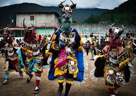

Virgen de la asuncion
La Virgen de la Asunción es una de las figuras más veneradas en la tradición católica, especialmente en países de América Latina, incluido Guatemala. Se la celebra el 15 de agosto y simboliza la creencia de que María, madre de Jesús, fue llevada al cielo en cuerpo y alma al final de su vida terrenal. En Guatemala, su festividad se entrelaza con la rica cultura y tradiciones locales, convirtiéndose en una ocasión de gran importancia religiosa y social.
Festividad de la Virgen de la Asunción en Guatemala
La festividad de la Virgen de la Asunción en Guatemala es un evento anual que atrae a miles de fieles y turistas. Durante esta celebración, las comunidades se visten de gala, y las iglesias se adornan con flores y luces para honrar a la Virgen. La fiesta no solo es un momento de devoción, sino también una oportunidad para la unión familiar y comunitaria.
Celebraciones y actividades
La festividad comienza con misas y procesiones que recorren las calles, donde los devotos llevan imágenes de la Virgen en andas, acompañadas de música, danzas y trajes típicos. En muchos lugares, se realizan actividades culturales, como bailes folklóricos, conciertos y ferias gastronómicas, donde se pueden degustar platos típicos guatemaltecos. Las celebraciones en ciudades como Guatemala, Antigua y Quetzaltenango son particularmente notables, llenas de color y fervor religioso.
Rituales
Un ritual destacado es la "Misa de la Asunción", que reúne a miles de personas en las iglesias principales. Durante la misa, se realizan oraciones y cantos en honor a la Virgen, pidiendo protección y bendiciones para la comunidad. Además, algunas comunidades llevan a cabo ceremonias en las que se ofrecen flores y otros obsequios a la Virgen como símbolo de gratitud y devoción.
Impacto cultural:
La festividad de la Virgen de la Asunción no solo refuerza la fe católica, sino que también fortalece la identidad cultural de los guatemaltecos. Las tradiciones, leyendas y prácticas que rodean esta celebración reflejan la rica herencia indígena y colonial del país. Esto convierte a la festividad en un espacio de diálogo entre lo sagrado y lo profano, donde se celebra la historia y la cultura del pueblo guatemalteco.

Danza del venado
La Danza del Venado es una manifestación cultural de gran importancia en Guatemala, especialmente entre las comunidades indígenas, como los pueblos de la región de los Altos. Esta danza no solo es un espectáculo visual, sino que también encierra profundas tradiciones y significados que celebran la relación entre el ser humano y la naturaleza. A través de sus movimientos, música y vestimenta, la danza rinde homenaje al venado, un animal sagrado en la cosmovisión indígena, simbolizando la vida, la fertilidad y la conexión espiritual con la tierra.
Celebración y Significado
La Danza del Venado es una representación ritual que tiene lugar durante diversas festividades, como las celebraciones en honor a San Juan Bautista y en la fiesta de la Virgen de la Asunción. Este baile se caracteriza por su energía y colorido, y es un momento en el que se unen la espiritualidad y el arte.
Elementos de la danza
La danza incluye un vestuario especial, donde los bailarines se visten con trajes que imitan la apariencia del venado, incluyendo máscaras que representan su rostro. A menudo, los trajes están elaborados con materiales naturales y adornos que reflejan la cultura local. Los músicos, que acompañan la danza, utilizan instrumentos tradicionales como el tambor y la flauta, creando una atmósfera festiva y emotiva.
Rituales y simbolismos
Durante la danza, se representan diferentes escenas que simbolizan la caza del venado, los ciclos de la vida y la relación entre los seres humanos y la naturaleza. El venado es visto como un mensajero de los dioses, y su danza se realiza para agradecer por las cosechas y pedir por la abundancia. Es un momento de conexión con las deidades y una forma de recordar las tradiciones ancestrales.
Impacto cultural
La Danza del Venado no solo es una forma de entretenimiento, sino que también juega un papel crucial en la preservación de la identidad cultural de las comunidades indígenas. A través de esta danza, se transmiten valores, creencias y narrativas que forman parte del patrimonio cultural de Guatemala. Además, se ha convertido en un atractivo turístico, donde visitantes de todo el mundo pueden apreciar la riqueza cultural del país.
